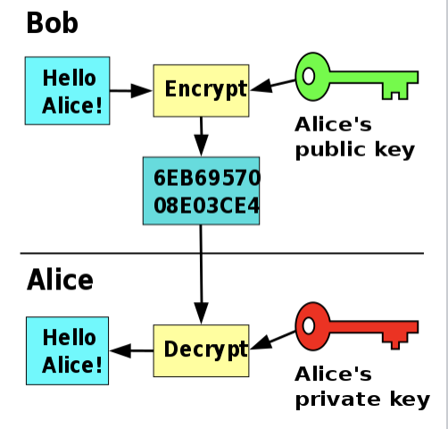

RSA TLS AES WTF ?? Partie 1

E2EE
Lorsqu'il s'agit d'échanges de données sur les réseaux, que ce soit sms, email, chat… On peux vouloir empêcher que quiconque puisse y accéder qui ne soit pas notre destinataire. Sauf qu'il y a eu des précédents ou des réseaux terroristes, et organisations criminelles utilisent ces systèmes.
Pour les politiciens, si on penses aux crimes, évidement que ce genre de mécanisme est absolument inadmissible, mais parce que le crime est inadmissible.
Mais est-ce qu'une protection 100% sure de bout en bout est vraiment réalisable?
Dans l'idée d'une protection maximale avec délégation de la transmission via une autorité reconnue pour contrer les mauvais usages, nous pourrions utiliser un serveur intermédiaire.
Pour se protéger et éviter qu'une personne capable d'écouter les échanges sur le réseau puisse lire nos messages, nous allons chiffrer nos message à l'aide d'une clé. En fait 2 clés. Une entre nous et le serveur, et une entre le serveur et la personne avec qui nous discutons.
Ce qui fait que si un mandat juridique ordonne la récupération de messages auprès de cette autorité surgit, il est possible d'accéder aux dits messages.
Alors l'argument évident en ce sens, serait que nous n'avons rien à cacher de toute façon! Sauf que de fait ce serveur est un énorme point de vulnérabilité. Et si on pouvait éviter que les photos et messages un peu osés que l'on envoie à nos partenaires se retrouvent publique, et c'est déjà arrivé une paire de fois, finalement là on a envie de se protéger sur toute la ligne.
Alors aujourd'hui on va plutôt opter pour du chiffrage de bout en bout. Il existe déjà des services de messageries comme WhatsApp ou Signal (qui en passant n'utilise pas qu'une seule clé mais plusieurs) qui encode vos messages en bout en bout. Messenger de Facebook aussi, mais il faut l'activer. Alors si vous ne l'avez pas encore fait prenez un instant :)
Enfin avant de rentrer dans le technique il reste un dernier point de vulnérabilité, et il est entre vos mains parce que pour que vous ayez une expérience utilisateur acceptable, tout est décodé au moment ou vous recevez le message, donc il ne vous reste plus que votre code pin, pulpe de votre doigt ou fond d'iris pour vous protéger. Si quelqu'un venait à vous piquer votre téléphone ou ordinateur, c'est fichu. Les points les plus faibles sont les endpoints.
Bon alors comment ça marche cette protection?


Le but de TLS est de protéger les échanges et dans certaines implémentations, de garantir l'intégrité des données. L'algorithme se découpe principalement en 3 moments distincts.
Le premier consiste entre 2 parties de choisir une méthode d'échange de clés.
2 grandes méthodes sont utilisées. RSA et Diffie-Hellmann.
Le second consiste en chiffrer les données échangées. Il y a quelques temps était utilisé le DES (Data encryption standard) qui chiffre sur 56bits. Qui est maintenant devenu obsolète. Alors est apparu le 3DES ! Qui triple la longueur. Cependant il reste vulnérable aux attaques par collision. Il a fallu développer un nouveau standard plus sécurisé, le nommé AES (Advanced Encryption Standard) dont nous allons parler ensuite.
Et enfin dernière étape, vérifier l'intégrité des données. La plupart du temps on utilisera HMAC ou MD5 pour hasher les données et comparer que les hash sont identiques. Il a été démontré que ces algorithmes ont des faiblesses de collisions. Les versions modernes de TLS utilisent AEAD (Authenticated Encryption with Associated Data) et ajoutent un MAC (un Message Authentication Code) dans le message afin d'en garantir l'authenticité.
Pour créer un certificat TLS, vous avez 2 solutions.
Soit vous faites appel à une autorité qui créera les certificats vous en fournira un à déposer sur votre/vos serveurs et validera que vous êtes bien le possesseur du site à protéger. Lorsque votre navigateur réclamera le port 443 il tâchera de regarder si un certificat répondant à celui défini sur le serveur existe dans sa base de données, dans le cas contraire il contactera les services d'autorité. En cas d'échec il considèrera que le certificat est auto-signé.
Autre alternative, c'est de générer vous même le certificat avec let's encrypt.
Le but n'est pas de se pencher sur la manière d'enregistrer un certificat il y a tout ce qu'il faut sur les internets. Nous allons nous pencher sur les mécaniques derrière TLS.
HACHER vs CHIFFRER

Pardon de repasser par cette étape scolaire mais je sais bien qu'on a tous nos anglicismes et notre vocabulaire alors je voulais m'assurer que l'on parle bien de la même chose pour toute la durée de cet article :)
Un hachage est une chaîne ou un nombre généré à partir d'une chaîne de texte. La chaîne ou le nombre qui en résulte est d'une longueur fixe, et dont la sortie variera considérablement même avec un minimum de changement dans la chaîne d'entrée. Principe important c'est que pour une entrée donnée, la sortie sera toujours la même. (MD5, SHA, SHA-2, SHA-3) Un bon algorithme de hachage, est un algorithme dont on ne peux pas inverser le processus.
Le chiffrage transforme les données en une série de caractères illisibles, qui ne sont pas d'une longueur fixe. La différence clé entre le chiffrage et le hachage est que les chaînes chiffrées peuvent être inversées dans leur forme déchiffrées originale si vous avez la bonne clé.
Il existe deux principaux types de chiffrage, le chiffrage par clé symétrique et le chiffrage par clé publique. Dans le chiffrage à clé symétrique, la clé de chiffrage et de déchiffrage est exactement la même. C'est ce à quoi la plupart des gens pensent quand ils pensent au cryptage. La faute aux chaînes "cryptées".
Le chiffrement à clé publique par comparaison a deux clés différentes, l'une utilisée pour chiffrer la chaîne (la clé publique) et l'autre pour la déchiffrer (la clé privée). La clé publique est mise à la disposition de tous pour chiffrer les messages, mais seul le destinataire prévu a accès à la clé privée, et donc la possibilité de déchiffrer les messages. (AES, PGP)

Pour résumer
Le hachage est un moyen idéal de stocker les mots de passe, car les hachages sont intrinsèquement unidirectionnels dans leur nature.
Le chiffrage ne doit être utilisé que lorsqu'il est nécessaire de déchiffrer le message résultant. Par exemple, si vous essayez d'envoyer des messages sécurisés à quelqu'un à l'autre bout du monde, vous devrez utiliser le chiffrage plutôt que le hachage, car le message ne sert à rien pour le destinataire s'il ne peut le déchiffrer.
RSA

RSA consiste à créer une paire de clés, l'une sert a chiffrer, l'autre générée à partir de la première, est la seule capable de déchiffrer le message chiffré par la première clé. Pour générer les clés on sélectionne 2 nombre premiers (p et q) de très grande taille. Suffisamment pour qu'il soit impossible de les retrouver avec multiplication entre eux. on notera le résultat du produit n. ce produit est publique. Et c'est un énorme nombre. L'étape suivante consiste à calculer le totien, ce truc sans rentrer dans le détail c'est le nombre d'élément dont le plus grand diviseur commun au sein de n est 1 mod n. Bref, Si vous êtes à fond dans les maths on en reparlera, toujours est-il que on peux simplifier l'équation par (p-1).(q-1) on le notera ϕ(n).
Pour calculer la clé publique on cherche un nombre premier situé entre 3 et ϕ(n) possédant un plus grand diviseur commun égal à 1 de ϕ(n), c'est à dire que l'on cherche une valeur n'ayant aucun diviseur commun avec ϕ(n) .
On a donc notre clé publique.
Pour calculer la clé privée il faut trouver le multiplicateur inverse. c'est une valeur dont le produit avec la clé publique résulte en un nombre qui vérifie 1 mod ϕ(n) égal à 1
Choisissons deux nombres premiers : p=11 et q=13. Le multiple n est donc n=p×q=143. Le totient de n est ϕ(n)=(p-1)⋅(q-1)=120.
Pour la clé publique, on choisit un nombre premier aléatoire qui a le plus grand diviseur commun (gcd) de 1 avec ϕ(n) et qui est inférieur à ϕ(n). Choisissons 7 (note : 3 et 5 n'ont pas un gcd de 1 avec ϕ(n). Donc e=7, et pour déterminer d, la clé secrète, il faut trouver l'inverse de 7 avec ϕ(n). Ceci peut être fait avec l'Algorithme d'Euclide Etendu, et donc d=103. Ceci peut être vérifié avec : e⋅d = 1 mod ϕ(n) et 7⋅103 = 721 = 1 mod 120.
Choisissons notre message en clair, `m = 9`.
le chiffrage :
`m^e mod n = 9^7 mod 143 = 48 = c`
le déchiffrage :
`c^d mod n = 48^103 mod 143 = 9 = m`
Pour que tout ceci fonctionne, il faut manuellement communiquer la clé publique. L'avantage du system, c'est qu'il fonctionne dans les 2 sens. Un message chiffré avec la clé publique ne peux être déchiffré qu'avec la clé privée et vice versa.
Et si on avait une procédure qui permette d'échanger sans intervention humaine les clés?
Key exchange Diffie-Hellmann
A suivre...